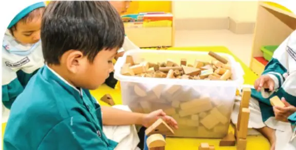

Narasi Akademik
Materi akademik dikemas dalam bentuk terapan yang berhubungan dengan penyelesaian masalah sehari-hari, sehingga siswa terlatih memimpin diri dan orang lain.
Kurikulum Nasional Deep Learning dan Kurikulum B.E.S.T khas Mutiara, diterapkan di tiga jenjang yang terakreditasi A.
Kurikulum Deep Learning mendorong siswa memahami materi pelajaran secara mendalam, bukan sekadar hafalan.
Kurikulum ini membangun kecerdasan berpikir kritis, pemecahan masalah, kemampuan menerapkan ilmu pada konteks baru, kreativitas, dan kolaborasi, sehingga pembelajaran efektif dan ruang diskusi semakin luas.
Dikembangkan dalam sistem pendidikan Mutiara untuk mewujudkan siswa yang berkarakter, edukatif, solutif, dan terampil.
Siswa tumbuh dengan karakter unggul dalam kedisiplinan, kemandirian, ketakwaan, integritas, nasionalisme, dan kepemimpinan.
Siswa tumbuh menjadi pembelajar cepat, berpengetahuan luas, bernarasi visioner, selalu ingin tahu dan ingin mencoba hal positif.
Siswa tumbuh menjadi problem solver bagi diri sendiri, orang lain, dan masyarakat, mampu memimpin dan peka terhadap permasalahan di sekitarnya.
Siswa tumbuh dengan kecakapan hidup yang akan digunakan dalam menata hidup dan masa depannya.
Program ini berfokus pada kemampuan membaca, menghafal, dan memahami Al-Qur’an menggunakan metode Wafa, inovasi pembelajaran dengan pendekatan otak kanan yang komprehensif, mudah, dan menyenangkan. Pembelajarannya memakai metode 5P (Pembukaan, Pengalaman, Pengajaran, Penilaian, dan Penutupan) dengan nada hijaz. Target hafalan: surah dalam Juz 30 untuk lulusan PAUD, 3 juz untuk lulusan SD, dan 2 juz untuk lulusan SMP.

Kelompok Bermain (KB), TK A, dan TK B
Sentra atau Beyond Centres and Circle Time (BCCT) adalah model kurikulum pendidikan anak usia dini yang dirancang oleh Pamela C. Phelps, Ph.D., di Florida, Amerika Serikat. Melalui metode Sentra, guru memberikan rangkaian aktivitas untuk memfasilitasi kemampuan anak sesuai tahapan perkembangannya.



Berkata baik, budaya bersih, disiplin, bertanggung jawab, jujur, pembelajar
Pengetahuan tematik, membaca dan menulis, pengetahuan umum, pengetahuan alam
Mengelola dan mengekspresikan perasaan, menghargai sesama dan lingkungan, percaya diri
Pembiasaan ibadah, doa harian, membaca dan menghafal Juz 30 Al-Qur’an
Entrepreneur, toleransi, interaksi sosial, leadership
Komunikasi dua bahasa (Inggris dan Indonesia), mengenal teknologi masa kini

Kelas 1–6
Salat lima waktu, membaca Al-Qur’an dengan tartil, hafal hadis dan doa harian, tahfiz Al-Qur’an
Budaya 5S (senyum, sapa, salam, sopan, dan santun), gemar bersedekah
Nilai semua bidang studi tuntas dan kelulusan dengan nilai maksimal
Budaya bersih, disiplin, tanggung jawab, pembelajar
Menguasai teknologi terkini dan berbahasa Inggris aktif

Kelas 7–9
Pengelolaan emosi diri dan percaya diri
Sadar salat, sadar tilawah Al-Qur’an, terbiasa berdoa, tahfiz Al-Qur’an
Toleransi, entrepreneur, aktif berinteraksi sosial
Nilai semua bidang studi tuntas dan kelulusan maksimal
Budaya bersih, disiplin, tanggung jawab, berkata baik, leadership
Menguasai teknologi terkini dan berbahasa Inggris aktif
Program Unggulan
Materi akademik dikemas dalam bentuk terapan yang berhubungan dengan penyelesaian masalah sehari-hari, sehingga siswa terlatih memimpin diri dan orang lain.

Kegiatan berkala untuk mengembangkan bahasa Inggris secara aktif dan menyenangkan, bekerja sama dengan FEE Center (Future English Education Center).

Tahapan untuk melatih kemampuan berpikir logis, analitis, dan kritis serta menguasai dasar metode dan keterampilan ilmiah sesuai tahap perkembangan siswa.

Program peningkatan minat baca dan literasi untuk menambah keterampilan dan ilmu pengetahuan.

Program kepemimpinan yang terintegrasi dalam pembelajaran, ekstrakurikuler, dan organisasi siswa seperti OSIS dan Pramuka.

Wadah belajar orang tua tentang pendidikan dan anak, diasuh oleh para praktisi parenting.
Hubungi tim kami lewat WhatsApp untuk info pendaftaran, biaya, dan kunjungan sekolah.
Daftar via WhatsApp